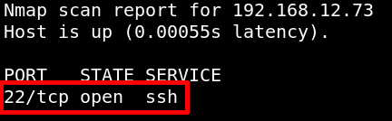

Port knocking is a method of externally opening ports on a firewall by generating a connection attempt on a set of prespecified closed ports. More info.
a) On your Kali Machine use the “netcat” command for the Port Knocking.
$nc -z 192.168.12.73 7469 8475 9842
b) Run the “nmap” scan again to ensure that our knocking worked and SSH Port is opened.
$nmap -p22 192.168.12.73
Output: 
Now we can connet to the victime machine via “ssh”.